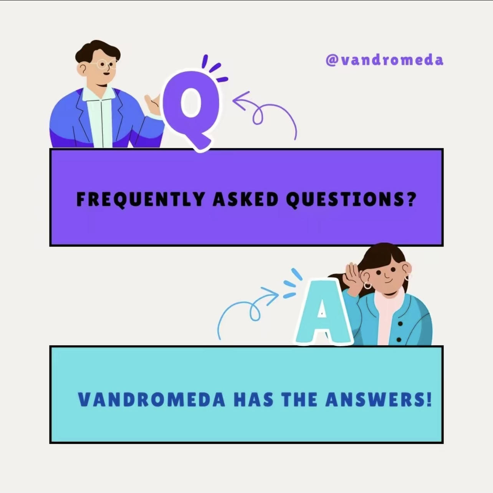

General Information
This branded website is publicly available at buas-media-interactive.github.io/my-website (please change text and hyperlink destination)
This website was created by… (only students listed below will be graded!)
- Senna van der Weide (ID: 223773)
- Natalia Cardasova (ID: 220416)
- Mila Engering (ID: 214466)
- Andrea Prodan (ID: 222084)
Content
Please clarify here the match between students and pieces of content. Make sure that you provide a link to the correct page within the website
| # | Student ID | Value | Name and link of content |
|---|---|---|---|
| 1. | 222084 | Value | Content title |
| 2. | 220416 | ||
| 3. | 214466 | ||
| 4. | 223773 |
Production
Design Elements
-
The colour scheme, a mixture of warm, cool and acromatic colours (used either on the Website or in Marketing):
-
#f44336
Red is color closely connected to our emotions. It represents passion, love and power. -
#f2d6c4 #f28e4f #ff6708
Orange is a very bright and vibrant colour which represent movement and change. It is a very friendly and inviting color, and is associated with creativity. -
#F5E320
Yellow is a bright and energetic colour. It can lead to a sense of happiness and cheerfulness. -
#39765B #04AA6D
Green is a very down-to-earth colour, it represents new beginnings, growth and the natural world.The colour can have a harmonizing and balancing effect. -
#004AAD #6DC7D0
Blue is used to represent calm and responsability, it creates a sense of reliability and strenght. The colour is also associated with peace. -
#5E17EB #6630d1
The colour purple is associated with creativity, imagination, spring and romance. - #fff
- #fffcf8
- #f1f1f1
- #ddd
- #000
- #5D5E5D
- #717070
- #B3B3B3
- #A4A4A4
Warm colours:
Cool colours:
Acromatic colors:
-
#f44336
- Font: The font used on all the pages is "Francois One static"
- User interface patterns: Divided on the pages there is a consistent color scheme,and typography. There is use of a responsive logo, which leads back to the home-page, also a responsive "call-to-action" button, to lead the user to a desired outcome. On this website you can find "contact" buttons which, depending on the placement on the website, lead you to send an email to the chose recipient.
- The structure of the navigation and content on the website is optimized to the users experience, and the acces to information. At the top of the page, there is a navigation menu which can be usered to navigate through the pages. Responsive design, the user is also able to use the responsive buttons on certain pages, which lead to the designated page attached. This will make it easier for the user to navigate on the website.
- The web-design corresponds with the personality and brand. This is evident through the use of color scheme which portray the values described for Vandromeda. This is also observable in the copy and the features on this website. Included in the marketing and communication plan is the aim to encourage the van owners to join Vandromeda. This for the sharing of knowledge or the building of our community. The chosen color scheme and the written copy for the website and for the social media posts, contribute to this goal.
The community we are building is one of our main value propositions, and by combining the marketing/communication plan with the website we will make this reality.
Credits
Please provide links and/or credits for third-party elements including:
- HTML templates if these are different from this one (buas-media-interactive/prj4-group-template)
- The source code for UX patterns other than the ones provided by the “Bootstrap” library (see getbootstrap.com/docs for a list of such patterns)
- Images that were not produced by students themselves, including when crediting is not mandatory (in other words, we ask you to credit Unsplash images)
Testing Report
- Goals:
- Finding a specific campsite
- Signing up for the website
- Contacting one of the creators
- Finding at least one review on the website on the community page
- Methods
- Participants:
Name1 (age, likes vans),
Name2 (age, is about to purchase a van),
Name3 (age, has been travelling with a van for a while),
Name4 (age, is about to purchase a van); all participants are withing the target group with age and interests - Setting: The testers will be provided with a link to Vandromeda website. 2 people will be asked to use their laptop and the other 2 will use their mobile phone. The testing will be done on campus with the presence of at least one teammember of Group 4 Class 9. The testing will be recorded (audio only) and feedback will be written down.
- Protocol:
Testing scenarios:Find at least 3 values and 2 members of the team; Try to email one of the team members; Register for the website; Find a Dutch campsite and try to check in for that campsite; Open the website’s Tiktok; Find a review or a comment on the community page
Expected results: Each subject is able to finish their task without great struggle; Even if they get lost on the website, they can intuitively find their way towards the goal.
Possible scenarios:The subject finishes their tasks successfully and give the supervisor of the interview possible improvements for the website; The subject does not finish the tasks given, is frustrated and does not understand the flow of the website
Testing report: The results, defects and fixes will be written down in a document in the appendix under the name Testing report. The results and review of these results will be also covered in the Testing report.
- Participants:
Marketing
Target audience
Demographics:
Age: 25-35 years old
Location: Europe
Income level: 4,5-6,5k a month
Education: Masters degree
Job: Camper vanners, Remote workers (In the fields of: IT, Marketing, Finance, HR, Online assistant) (Haan, 2023)
Psychographics: Travelling, lovers, nomad lifestyle, independent, enjoy flexibility (working hours, location)
Interests: Photography, sightseeing, travel planning
Behavior: Want to engage in a community, use social media daily (Instagram, Facebook, Tik Tok, Pinterest)
Need: In need of a community of fellow travelers
Want: A dedicated platform where they can information on travel tips, locations etc designed especially for camper van users
Solution they are hoping for: A platform that encompasses their passion for van traveling and a spirit of community.
Persona
Noa is a 31 year old who loves travelling and trying out new things. Noa is a social person and enjoys sharing these adventures with likeminded travellers. She has been working as an online marketing specialist for a few year now. For both her work and personal life she spends a lot of time on Instagram, Facebook and TikTok. Because she doesn’t have to stay in the same place for work, she decided to start campervanning 14 months ago. She did a lot of research before buying a campervan, to make sure she made the right investment. None of het current friends are into camping, so it was difficult to get trust worthy tips. She has met some people through social media, but it is hard to stay in touch when you are travelling different parts of the continent. On a regular day Noa usually starts the day by checking her social media apps for messages. She then checks the Vandromeda website for any fun activities in the area. Depending on the activities in the area she will either sign up and get ready for an activity. Or she will take a day to herself and go for a hike in the local nature. If Noa is looking into travelling to a different area, she likes to use the website to check out new places with a lot of activities in het interest. She is planning to see all the wonders Europe has to offer, and making a lot of friends on the way.
Communication strategy
Purpose: The purpose of this campaign is to tease the arrival of our website, while also gaining an audience that would be inclined in joining our platform. We wanted to connect with like-minded camper vanners who love traveling and seek a spirit of community, which would lead to organic advice and sharing of tips and tricks between each other.
Campaign focus: This campaign is centered around getting the platform out there and to gain subscribers for our brand new platform, Vandromeda! Furthermore, we aim to establish our presence on Social Media, so we could be discovered by our audience and have a wider reach.
Message: The message of our campaign, along with our slogan “Have a VAN-tastic life” is “Leave behind the old ways, and embark on the journey of a lifetime.” We want to encourage our followers to join our platform, while also giving them a taste of what van life is/ could be, through posts such as QandA, interactive polls, short-video content and visual posts.
Communication goals: Within the period of our campaign, we want to have active engagement with our audience.
Behavior:Actively like, share and watch the content posted on our social media platforms.
Website behavior: Them interacting with the Map (the cards for Romania, Slovakia and The Netherlands)
Indicator: An average of 15 to 20 likes per post on Instagram, 10-15 likes and 200-500 views per Tik Tok, with an average watch time of 3,5 to 5 seconds. Build a community and stimulate interactivity between our social media profiles and our followers.
Behavior: Our followers actively engage with the polls and QandA’s posted on Stories or integrated in feed posts.
Indicator: 5 to 7 responses per poll/story/questions. Reach new possible followers that may be interested in the Vandromeda platform.
Behavior: Reach non-followers in every post on Instagram and have non-followers profile views on TikTok
Indicator: Reach 3 to 7 non-followers per post on Instagram and gain 3 to 5 non-followers profile views on Tik Tok
Build an audience that is interested in the Vandromeda service and its arrival.
Behavior: The target audience decides to follow our social media platforms.
Indicators: Gain 70 followers across our Tik Tok and Instagram accounts (50 followers on Instagram, 20 on Tik Tok)
Chosen channels and platforms
InstagramInstagram is a visual content platform that has started through being able to only post photos, and has evolved and modernized with features such as Reels or Stories. With a great user rate of around 1,4 billion in 2024 (Dixon, 2023), the Meta owned platform is a great fit to spread the message of the arrival of our platform. Furthermore, with its high engagement rate “59% of them (users) are on the platform daily” (Han et al., 2016), we believe that we will be able to reach our target audience easier through our account. Our target audience is camper vanners, men and women, in the age range of 25 to 35 years old, and 30,6% of the platform’s users (S. J. Dixon, 2023) are in our age demographic. Instagram algorithm tends to show the users posts based on their past interactions with specific accounts, posts or hashtags (Instagram, 2024), which assures us that our followers will be seeing our activity and will have a chance to react to them.
First of all, the highly visual appeal of Instagram is a crucial factor, as it allows us as a brand to create videos and pictures that are engaging and inspiring, and that can resonate with our audience. We have combined elements of designs such as fonts, shapes and colors from our style guide in our posts for them to be recognizable to our target, as well as following trends on Reels, to broaden our reach to new followers. The feature of “Stories” was also used, as polls,music, additional pictures and questions are integrable, and that aligns with our goal of “Build a community and stimulate interactivity between our social media profiles and our followers”. We have full access to see who interacts with our content, when or in what way, which helped us tremendously in tracking the behavior desired “Our followers actively engaging with the polls and QandA’s posted on Stories or integrated in feed posts.”, and the indicator “5 to 7 responses per poll/story/questions.”
Second of all, the engagement mediums present such as likes, comments, shares and direct messages are all interconnected with our goal of “Within the period of our campaign, we want to have active engagement with our audience.”. To further add, with their analytics tool, we are able to track in real time how the posts are performing, who they reach, how many people have reacted to them, and then determine if it aligns with our desired behavior of “Actively like, share and watch the content posted on our social media platforms.” and our indicator “An average of 15 to 20 likes per post on Instagram, 10-15 likes and 200-500 views per Tik Tok, with an average watch time of 3,5 to 5 seconds.”
Third of all, brand awareness is high on Instagram, taking into consideration their 1,4 billions of users, the platform could provide Vandromeda a vast reach. With the wish of duplicating the sense of community that is aimed through the platform, paired with the desire of reaching new possible users, the promotion of the website to a larger pool of camper van enthusiasts within the age range of 25 to 35 years old is possible. To be able to achieve this, the feature of hashtags came in very handy, as the number of posts under every tag was visible, as well the users being shown those posts when they decide to follow a specific hashtags. This aligns with the communication goal of “Reach new possible followers that may be interested in the Vandromeda platform.” and “Build an audience that is interested in the Vandromeda service and its arrival.” Analytics again came in handy, as the behaviors of “Reach non-followers in every post on Instagram'' and “The target audience decides to follow our social media platforms.”, and their indicators “Reach 3 to 7 non-followers per post on Instagram”, respectively “Gain 50 followers on Instagram”.
To conclude, the communication goals were what ultimately made us decide to settle on Instagram as the brand’s main social media platform. Engagement, interaction and building an audience interest, in combination with the visual appeal and the platform’s features, were crucial factors in the final decision of promoting Vandromeda on Instagram, in combination with their huge users, the daily users rate and the age range of the target audience.
Tik Tok
Tik Tok is the short-form video sharing platform that took the world by storm during the lockdowns of 2020. With a user base of 900,7 millions of followers estimated in 2024 (Ceci, 2023), its power in terms of trend creation, and its influence on how social media strategy is done , Vandromeda will clearly benefit from the promotion done on this platform. Albeit its low engagement rates of 11,97 on users with followers between 1,000 to 10,000 followers (Dencheva, 2024), their feature of the "For You" page has a huge influence in the music discovery process on the app. The algorithm is designed to identify and predict user preferences, recommending tailored content based on past interactions.(Warme et al., n.d.)
Our target audience is camper vanners, men and women, in the age range of 25 to 35 years old, and 32,6% (Ceci, 2024) of the platform’s users are in our age demographic.
First of all, Tik Tok has an interesting approach, as it displays an unique format of short, snappy and engaging videos, which has been proven to be appealing to multiple audiences. In a world where campervan owners are always on the road and may not always have a lot of spare time on their hands, this is a great chance to reach them easily. This is in direct correlation with our goal of “Within the period of our campaign, we want to have active engagement with our audience.”, the behavior desired “Actively like, share and watch the content posted on our social media platforms.”. The indicator “200-500 views per Tik Tok, with an average watch time of 3,5 to 5 seconds.” is easily trackable through the Analytics tool of TikTok, which also has helpful resources such as Inspiration or Creator Academy, which teaches users specific strategies for posting. We have also taken advantage of those tools, to further see what is trending and what can be done in terms of content ideas. Furthermore, the platform puts great emphasis on showcasing creativity, niche targeting and a sense of authenticity, which aligns with our target audience of free spirited campervan owners, who are travel enjoyers, as well as passionate about the uniqueness of the van lifestyle.
Second of all, TikTok as a means of social media possesses a great power of making content go viral through sounds and popular hashtags. Traveling has always been popular on social media, but this only has been amplified by ByteDance’s platform, which fits great with the theme of our platform and its content. To expand even more, the algorithm is especially designed for niche targeting, as it does not push content that is already popular, but it focuses on the behavior of the users, their interests and their interactions with what id displayed on the “For You” page. This directly connects with our goal of “Reach new possible followers that may be interested in the Vandromeda platform.” as it is helped by the algorithm itself, through the usage of hashtags and video templates. The desired behavior is “ To have non-followers profile views on TikTok”, with the indicator of “Gaining 3 to 5 non-followers profile views on Tik Tok”.
Third of all, this platform promotes creativity and showcasing aesthetics, which is aligning with our feature of displaying campervan locations and their beauty. Furthermore, tips, tricks and insights are always a trend, and are continuously evolving in the travel niche, which is great promotion for our service. This aspect directly aligns with our goal of “Building an audience that is interested in the Vandromeda service and its arrival.”, with the desired behavior of “The target audience decides to follow our social media platforms.” By posting aesthetically pleasing videos of locations, showcasing the van life and tips and tricks, we believe that we will be able to attract followers. The indicator for this particular goal is “To gain 20 followers on Tik Tok '', which will be measured via their followers counter.
To conclude, TikTok was chosen as a secondary platform for promotion, as it hosts our audience and promotes the principles that will for sure reach them. Short form video content has taken the social media promotion world by storm, with its snappy nature and appeal, which Vandromeda as a brand can make use of to its advantage. Furthermore, it also aligns with the communication goals, which will help to gain exposure and subscribers for Vandromeda.
Learning Points
This campaign has been truly an eye opening experience for the entire team, as we had to build it from the ground up, which proved to be a great opportunity to learn and evolve in this field.
1. We have learned that the intention behind every post is truly an important aspect that can be easily overlooked while considering the looks of a picture/video, the caption, hashtags, hour of posting etc. The message that is being expressed matters to the consumer and it can easily influence their behavior , from ignorance to actually interacting with a post by liking, commenting or sharing. Although we have tried to have a clear intention behind each post, there were moments we have been distracted by trends or visual appeal, which has been a great learning experience: Posts should be created based on intention and message, and then the visuals should be built based on that, rather than choosing what can look best. What we would do differently is build some categories of content (QandA on stories, Given Advice, Location of the week etc), see the intention behind each of them, see how they could intrigue and help our followers and post with more attention than we did so far.
2. Reaching the audience can feel easy in some times, and difficult in other times. Some posts did better than others, in terms of likes, reach, which can be both motivating and demoralizing at the same time, in accordance to the results obtained. At the end of the day, perfection is unachievable, and some posts are bound to outperform others, what is important is to notice patterns and gather insights in what works and what does not. What we would do differently is do a testing trial, notice patterns, understand what works best, and stick to it. Additionally, once a few months, we would introduce new content, test that itself, as well as monitor what we already have, see how it performs, and ultimately decide if we should stick to it, try to refresh and revive it, or just simply, give up on it. To expand, we would also not compare ourselves and get swooned about what other brands are performing, at the end of they day, each audience has its own magic, and the right people will choose our platform at the end of the day, because it reflects their interests and passion.
3.Posting hours are very important in the performance of a post itself. We have tried everything from noon, to evening, to the morning hours and saw what performed the best and what did not. If we were to change something, we would post solely during the noon, around 12 AM, as that represents a break moment for most people, where they stop for a second, have lunch, and then check out their social media. Evenings also outperformed, as an example, our highest liked Tik Tok, which contained the sad mouse trend, was posted around 7PM, which offered visibility to it, as our target audience and new audiences had the time to spare on social media and get our video displayed on their “For You’ pages. If we could do something differently, is to split Instagram Feed posts and short form video content to be posted in the evening, and then stories to be posted during noon, to assure maximum visibility and performance. Unfortunately, posting around midday (2-5 PM), did not exactly work and has not benefited us in any shape or form. To expand, we have noticed Monday at noon time, a post with an encouraging message really got our followers engaged, which is a pattern that can be reused once a few months.
4.Tik Tok’s algorithm is very hard to anticipate, and as easy as it may seem to go viral from the outskirts, the reality looks vastly different. We have tried to build our content around the content we wanted to implement on our website, as well as did a few trendy pieces. One thing that we have learned is that riding the wave of a trend builds engagement on that particular post, but does not gain actual dedicated followers of our service/of our Tik Tok account. Due to its algorithm and the fast pace nature of the platform itself, the users tend to be very distracted by the overwhelming amount of content, and the intent behind a follow on this specific social media has to be genuine interest. Furthermore, we have noticed better engagement and follower count was organic when we posted things such as QandA, or how van life would be like. We also posted another trend, which did not drive us really any engagement, and has taught us a valuable lesson: it is better to be consistent with the type of content that aligns with the authenticity of the brand, and a trend from time to time it does help, but it needs to be adaptation to fit exactly what the brand is about. What we would do differently is stick to a more regular, daily regime of posting, keeping track and actively using trending sounds available, and lastly, explore the usage of even more hashtags.
5.Planning has to be more rigid, which is a good lesson to have in the future. We had some issues, as the first week of the project dedicated for social media had zero posts from our side, due to a rebranding and changing everything from the logo to the color palette, while also having our account banned multiple times by Instagram, or even not being allowed to create one at all, which made our process harder and tiring. Thankfully, we created a dedicated email and discovered that the problem was connected with the age policy on Instagram. If a user already has other accounts connected, the platform does not require the birthday, as it extracts it from the other accounts already existent, but that was not the case. When we get to finalize that process, we started posting. Planning can be overwhelming at times, as there is some advice that posting daily is better, other parties say it is not. We have noticed that posting daily might create a slight fatigue to the user and the algorithm, compared to posting once a few days, which worked better by far, for the feed at least. When stories were posted back to back, we noticed a higher engagement from our follower base. If we were to do something different, is to test the first two weeks, one posting everyday, and one posting once every 2-3 days, see what works best, and stick to that. mFurthermore, we would plan posts more rigorously and try to be more strategic about what to post, when and how that would affect our reach to both followers and non followers.
6.The inspiration tools offered by Instagram and Tik Tok can be useful and are not talked about enough. We have discovered them while navigating the analytics tool, and they proved to be there for a good reason. Unfortunately, at first, we did not pay much attention to them , as we were focused on creating our posts around the content of Vandromeda as a brand. While we still believe in that way of thinking, it is important to see what those platforms recommend, as it is based on what works, how the algorithm works, and ultimately, the platform will push the content made based on their recommendation, to gain exposure for their new feature. If we could something different, we would, from the get go, explore the inspirations feature, take the advice that is given there, and start planning, and creating our trend around what works, so we could gain more exposure from non followers, accompanied by the content of our platform, so we get engagement from our existing followers.
Future Planning
Vandromeda is not stopping, and with that, the promotional activities are following suit. Future planning for social media is essential, and we are striving to grow our platform.
Firstly, we would create multiple categories of content that would appear regularly on our account, thus to establish an identity for our social media platforms and to be more recognizable. As an example, we would have a monthly location spotlight, that would have a dedicated post on Instagram, that would be made of information, tips, and advice, accompanied by some pictures of the location. Furthermore, on our stories, we would open a box of questions for our followers, for them to tell us their curiosities, and another one, where they can share their experiences of that location, whether positive or negative, in a means to remain authentic and transparent, in alignment with our values. Another idea would be to have a monthly series of stories , titled “It wasn’t that Vantastic” where our audience will have the chance to tell us a funny story about their experience as a camper vanner, and the five best ones will be picked and posted. We want to improve our interactivity with our followers, thus build on our connection with them, and that would lead to a more stable users base. This is a great chance to do some “Word of mouth” marketing, as customers are more inclined to recommend a product if they have trust in its quality, enjoy its advantages and have a good experience using the product. To expand, this type of content is easily shareable via social media, which can lead to our content being exposed to new audiences.
Secondly, we would introduce a mascot to our social media platforms, named Anna, which is actually our persona. We believe that, by introducing our mascot, which is directly inspired by our target audience and represents the profile of our customer, she will be more credible and will take on an “Influencer” status for our online communities. At the end of day, she is the peer of our followers. The traditional way would opt for a more standard option, such as a celebrity endorsement, but that does not stand for us, as it would feel inauthentic. Everybody knows that famous people live a lifestyle to a whole other level, including mansions, which is the complete opposite of our audience’s vision of their ideal lifestyle, and we want to avoid this type of clash, as it would not align with our vision or what we stand for. Furthermore, studies show that celebrities endorsements are not as effective as they used to be, and they can even cause the public to stray away from the product itself “(...)recent studies have found a negative effect of using celebrities as a product endorser. When audiences view the advertising presented by a famous celebrity who appears everywhere, eventually the effectiveness of the advertising will diminish, paralleled by the disinterest of the audience due to perceived overkill. As a result, audiences will not be interested in the product.”(Pairoa and Arunrangsiwed, 2016). After gathering this knowledge, we decided to make Anna our mascot, and to debut her on our social media. After all, we do strive to have a sense of community on our platform, and our social media would be the perfect place to launch her. Her design has to be carefully crafted and we will do our best to also integrate her in mediums such as gifs or stickers, to give her a sense of perceived emotions, to connect her with the watcher "(...) brands mascots in social network sticker sets can strengthen user identity through emotional affinity, rather than through a physical similarity. Well designed cartoon representations displaying realistic human emotions can communicate that emotion. This supports our suggestions that audiences or social network users could perceive emotion from brand mascot better than human endorsers." (Pairoa and Arunrangsiwed, 2016).
We do want to make her “human-like”, by writing the captions from a 1st person perspective, and her having her own recommendations/opinions. Anna would have her own segments, such as Ask Anna, which would be a monthly QandA session available on our Instagram Stories and Tik Tok comments, where our followers would get to ask anything as they please, from functionalities of our platforms, restaurant recommendations in certain locations to best rated camper van parking spots in any country. Anna also would appear in our posts, presenting different tourist attractions, and also in our Tik Tok. This also can align with a possible future feature, where she will be your personal assistant, guiding you on our website. Anna is meant to be a personalization of our brand, as well as a symbol of it!
Another plan we have for our future posts is to collaborate with european camper van influencers, such as @the_sunnysidephil (from Germany,27,1k on Instagram), @mygrations.nl (Dutch, 6,3k on Instagram), @reisstelnl (Dutch, 14,7k on Instagram, 1,59k on Youtube ) @thosehappy_days (British, 19,6k on Instagram, 195k on youtube) to name a few. This decision was made based on the fact that consumers have started to notice marketing ploys and the intention behind them, which in turn, can hurt a brand as their efforts to maximize sales falls short due to the campaign’s lack of effectiveness and the customer’s growing awareness “Consumers’ growing skepticism toward traditional marketing has made it increasingly difficult for firms to attract and influence consumers.“(Leung et al., 2022). Knowing this information, we chose to go with the influencer rute, as they tend to be closer with their audiences, as they constantly share multiple details of their life in front of a camera, which is in direct correlation with the campervan lifestyle. Its effectiveness is indisputable as “Studies show that “90% of people with access to the Internet trust recommendations from social media influencers. Related to the effectiveness, 90% of marketers find Influencer marketing effective. (Influence Marketing Hub, 2021). Brands of all sorts are generating positive returns with Influencer marketing. The influencer marketing effectiveness is measured with ROI, and according to the surveys, a large portion (90%) of marketers find influencer marketing effective. “(DIMITRIESKA and EFREMOVA, 2021).
For our collaborations, we would like them to produce some content for our Instagram and Tik Tok, where they can showcase their best campervan tricks, their origin story, and their favorite locations to visit. Furthermore, we would also request Instagram stories where they link our platform, explain to their respective audiences the concept behind them, as well as inviting them to join. We will have a collaboration a month, as we want each influencer to have their time to shine, as well as for them to also do a take over of our stories for a day, for both TikTok and Instagram, where they can present a day in their life on the road, in real time. To expand, since most of the influencers listed are also active on Youtube, that is a certain opportunity for us to gain exposure from an audience that maybe does not use social media at all, but would love to get traveling advice easier, as well as to have a community of like minded people. We will be sponsoring some of their videos, in exchange of a content-integrated advertisement, or simply them mentioning and showing their usage of our website and how it influences their decisions.We believe this type of content can inspire our audiences, as well as entertain them through the audio-visual material we will be bringing to them. Influencer collaborations have been proven to be successful, as they've taken the world by storm in the last few years, from cooking to even camper van traveling.
Lastly, we will be doing more rigorous planning, to test further what works and when and how that could lead to us to the most optimum results. We will also be adding feedback moments, where our followers can communicate to us what could be done to better their experience, what kind of content they would like to see, when, and what does not work anymore/ what can be refreshed and reused.
Professionalism
Instagram TikTok
Management
Lean Canvas
Fill in at least 2 bullet points per building block and according to the rubrics.
Problem
- Travelling on your own can, after a while, get very lonely. most websites give out tips how to come in contact with other people on the road, but no other platform helps meeting people up.
- It is very difficulty meeting camper van people in the same region, through the internet. Even if you find the Facebook group with like minded individuals, very often the participants in these groups are not currently in the same country/region.
- It can be hard to find good recommendation in another country, most recommendations are very touristy and busy. There are a lot of websites out there with good recommendations, the only problem is they are the same everywhere.
- It is not save meeting strangers from the internet, especially in foreign countries. The only solution currently out there is meeting in a crowded place.
- By using Vandromeda and joining the community, it will help the user with finding fellow travelers, give the review of camping places and give tips and advice when on the road.
Solution
- Our website has its content divided into countries, this way you can always see the activities and recommendations close to you. It also mean that the people you are connecting with are in the same area right now.
- Because our website works with a numberplate verification system, we always know who is using an account and they can be blocked if necessary. This makes it safer meeting up with strangers.
- Our website gives recommendations especially to 25-35 year old campervanners. This makes them very fitting for their kind of travel and all the other people on the platform are likeminded.
Customer segments
Demographics:
Age: 25-35 years old
Location: Europe
Income level: 4,5-6,5k a month
Education: Masters degree
Job: Camper vanners, Remote workers (In the fields of: IT, Marketing, Finance, HR, Online assistant) (Haan, 2023)Psychographics:
Travelling lovers
Nomad lifestyle
Independent
They enjoy flexibility (working hours, location)Interests:
Photography
Sightseeing
Travel planningBehaviour:
Want to engage in a community
Use social media daily (Instagram, Facebook, Tik Tok, Pinterest)
Need: In need of a community of fellow travellers
Want: A dedicated platform where they can information on travel tips, locations etc designed especially for camper van usersSolution they are hoping for: A platform that encompasses their passion for van traveling and a spirit of community.
Persona: Noa is a 31 year old who loves travelling and trying out new things. Noa is a social person and enjoys sharing these adventures with likeminded travellers. She has been working as an online marketing specialist for a few year now. For both her work and personal life she spends a lot of time on Instagram, Facebook and TikTok. Because she doesn’t have to stay in the same place for work, she decided to start campervanning 14 months ago. She did a lot of research before buying a campervan, to make sure she made the right investment. None of het current friends are into camping, so it was difficult to get trust worthy tips. She has met some people through social media, but it is hard to stay in touch when you are travelling different parts of the continent. On a regular day Noa usually starts the day by checking her social media apps for messages. She then checks the Vandromeda website for any fun activities in the area. Depending on the activities in the area she will either sign up and get ready for an activity. Or she will take a day to herself and go for a hike in the local nature. If Noa is looking into travelling to a different area, she likes to use the website to check out new places with a lot of activities in het interest. She is planning to see all the wonders Europe has to offer, and making a lot of friends on the way.
Unique value proposition
- With a single, clear compelling message, state why your brand idea is different and worth paying attention to.
Unfair advantage
- List the aspect(s) of your brand that cannot easily be copied, also called your sustainable competitive advantage(s).
Channels
- List your main path to customers.
- How do you reach them? What channel(s) do you use.
Key metrics
- List the key numbers that tell you how your brand experience is doing.
- For example amount of users, downloads, visitors, subscriptions, sales etc. Numbers you are able to measure.
Revenue streams
- List your sources of revenue: describe the revenue model and the (different) revenue stream(s).
Cost structure
- List your main costs: define the fixed and variable costs.
- Calculate the cost per unit.
Services/products
- State what your product and/or service is and how this contributes to your unique value proposition.
- Clarify the fit between the product/service developed and the brand identity/brand image.
Validation of Assumptions
Write a reflection on the choices made in creating choosing the trademark, including an analysis of the existing alternatives.
Appendix
The first link (Appendix file) leads to the whole appendix file where all the important documentation is accessible. The other links serve for easier navigation within the departments.